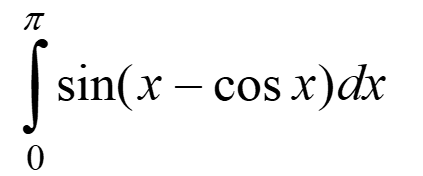

Розв’язати нелінійні рівняння та здійснити чисельне інтегрування функцій наближеними методами, використовуючи мови функціонального програмування та lambda, let та set! форми.
9.1. Знайти корені нелінійного рівняння виду . Пошук наближеного значення хоча б одного кореня рівняння f(x) = 0 на відрізку [a; b] здійснювати методами простої ітерації та дотичних. Значення a, b інтервалу вибрати самостійно. Порівняти результати розв’язків двома методами.
9.2. Написати процедури для обчислити інтеграла за формулами правих прямокутників і Сімпсона. Порівняти результати обчислення

Онлайн середовище jdoodle та мова функціонального програмування Scheme були обрані через:
1) Мова Scheme, що є діалектом мови LISP, проста і популярна мова функціонального програмування
2) В лекціях функціональне програмування розглядається на прикладах коду Scheme
3) Середовище jdoodle не потрібно встановлювати на комп'ютер.
Завдання №1
; Початковий вигляд функції 2x - cos(x) = 0
(define my-f (lambda (x)
(- (* 2 x) (cos x)))
)
; Канонічний вигляд функції 2x - cos(x) = 0
(define kanon-f (lambda (x)
(/ (cos x) 2))
)
; Похідна функції 2x - cos(x) = 0
(define my-f1 (lambda (x)
(+ (sin x) 2))
)
; Функція для розвязку рівняння методом простої ітерації
(define (simple-iteration f init-x acc)
(define (inner-logic current-x)
(let ((next-x (f current-x)))
(if (< (abs (- current-x next-x)) acc)
next-x
(inner-logic next-x)))
)
(inner-logic init-x)
)
; Функція для розвязку рівняння методом дотичних
(define (tangent-method f f1 init-x acc)
(define (inner-logic current-x)
(let* ((y (f current-x)) (y1(f1 current-x)) (next-x (- current-x (/ y y1))))
(if (< (abs y) acc)
current-x
(inner-logic next-x))
)
)
(inner-logic init-x)
)
(define acc 0.000001) ; Похибка 10^-6
(define root1 (simple-iteration kanon-f 10 acc))
(define root2 (tangent-method my-f my-f1 10 acc))
(display "\nroot1 = ")
(display root1)
(display "\nroot2 = ")
(display root2)
(display "\nmistake = ")
(display (abs (- root1 root2)))
Завдання №2
; функція для обчислення визначеного інтегралу
(define (f x)
(sin (- x (cos x)))
)
; межі інтегрування
(define a 0)
(define b 3.141592)
; Функція для обчислення визначеного інтегралу методом правих прямокутників
(define (right-rectangles f a b acc)
(define (get-xi i n) ; функція для отримання наступного xi
(+ a (* i (/ (- b a) n)))
)
(define (sum-f sum i n) ; процедура, яка рахує суму значень функції в n точках на проміжку a-b
(if (> i n)
sum
(sum-f (+ sum (f (get-xi i n))) (+ i 1) n)
)
)
(define (integral n)
(* (/ (- b a) n)(sum-f 0 1 n))
)
(define (inner-logic n)
(if (< (abs (- (integral n) (integral (+ n 1)))) acc)
(integral (+ n 1))
(inner-logic (+ n 1))
)
)
(inner-logic 1)
)
; Функція для обчислення визначеного інтегралу методом Сімпсона
(define (simpson f a b acc)
(define (get-xi i n) ; функція для отримання наступного xi
(+ a (* i (/ (- b a) n)))
)
(define (get-sum xi h) ; функція яка реалізує формулу Сімпсона
(* (/ h 3) (+ (f xi) (* 4 (f (+ xi h))) (f (+ xi (* 2 h)))))
)
(define (s-sum-f sum i n) ; Функція яка рахує суму всіх часстин, на які поділено відрізок a-b
(if (> i n)
sum
(s-sum-f (+ sum (get-sum (get-xi i n) (/ (- b a) n))) (+ i 2) n)
)
)
(define (s-integral n)
(s-sum-f 0 1 n)
)
(define (inner-logic n)
(if (< (abs (- (s-integral n) (s-integral (+ n 2)))) acc)
(s-integral (+ n 2))
(inner-logic (+ n 2))
)
)
(inner-logic 2)
)
(define acc 0.000001) ; Похибка 10^-6
(define s1 (right-rectangles f a b acc))
(define s2 (simpson f a b acc))
(display "\ns1 = ")
(display s1)
(display "\ns2 = ")
(display s2)
(display "\nmistake = ")
(display (abs (- s1 s2)))
Скрін-шот №1
Скрін-шот №2
В результаті виконання даної лабораторної роботи було виконано два завдання. Перше з них вимагало реалізувати два методи для розвязку нелінійних рівнянь, а саме це були метод простої ітерації та метод дотичних. Порівнюючи результати роботи даних методів можна побачити що розбіжності в отриманих розвязках починаються тільки із сьомої цифри після коми. Друге завдання полягало в реалізації таких методів чисельного інтегрування як метод правих прямокутників та метод Сімпсона. Знову ж таки порівнюючи отримані результати, можна помітити, що розбіжності починаються тільки з пятої цифри після коми.